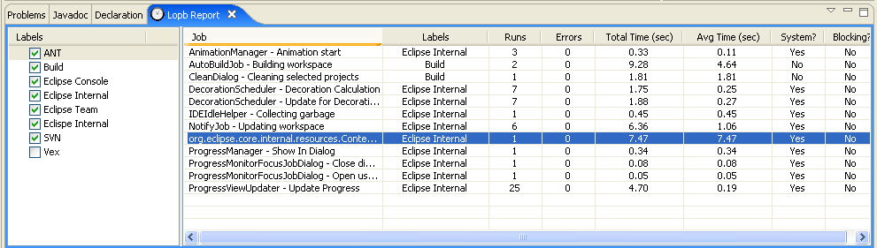

The following few paragraphs describe the features provided by Lopb, including the two Eclipse views, and the Eclipse workbench window trim contribution (i.e. Lopb Status indicator).
The Lopb Report View is the main view provided by Lopb. In the right panel, it shows a table of Jobs that have run since the beginning of the development session, which is generally when Eclipse started. In the left panel, a set of enabled or disabled Labels is shown. When a given label is enabled (checked), the jobs associated with that label will appear in the table.

Table 4.1. Lopb Report View: Columns
| Column | Description |
|---|---|
| Job | Shows either the jobId (which is derived from the class and name of the Job instance) or the jobAlias if one exists. This cell is editable so that users may modify the displayed text used to identify the job (a.k.a. JobAlias). Also see "Enable job renaming" in the Lopb Preferences page. |
| Labels | A comma separated list of labels assigned to a Job. Similar to Gmail labels used for organizing emails into one or many labels or categories. |
| Runs | The number of times the job has run since the start of the session. |
| Errors | The number of times that the job has returned an error code when it completed. |
| Total time (sec) | The sum of all run times, where each run time is equal to the end time minus the start time (in seconds). |
| Average time (sec) | The total time divided by the number of runs (in seconds). |
| System? | Job property indicating whether the job was started by an internal Eclipse system routine, or not (i.e. user-initiated). |
| Blocking? | Job property indicating whether this job is blocking a higher priority non-system job from starting due to a conflicting scheduling rule. |
In the top right corner of the view, the user may click on a drop-down command menu. The available commands are described below.
Table 4.2. Lopb Report View: Commands
| Command | Description |
|---|---|
| Export to CSV | Export the data from the Lopb Report View table to a comma separated value (CSV) file. See the "Output directory for exporting CSV files" preference in the Lopb Preferences page. |
| Reset session | Reset the user's session by clearing all jobs from the Lopb Report View table and setting all timers to zero. |
By selecting a row and then right-clicking, the user will be able to ignore a job from futher processing. This means that Lopb will not collect data for any future runs of the Job.